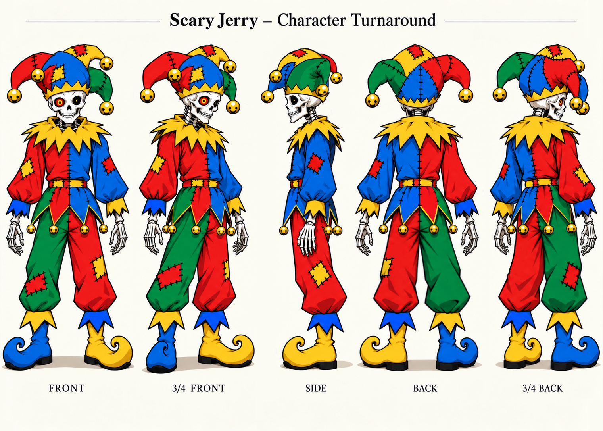

Scary Jerry
Also known as ScaryJerry.


Visual reference
A skeletal jester wearing a stitched red, blue, green, and yellow outfit, a bell-tipped cap, and mismatched curled shoes. His skull grin and striking red-and-yellow eye give the colorful design an eerie edge.
Personality
Behind the skeletal grin, Scary Jerry is a helpful community member who enjoys having fun. He offers straightforward explanations, dry observations, and an appreciation for impressive things—even when he isn’t a fan of whoever made them.
Character reference sheet included for archival reference; no reuse license is stated.
All Nous characters · Content notice